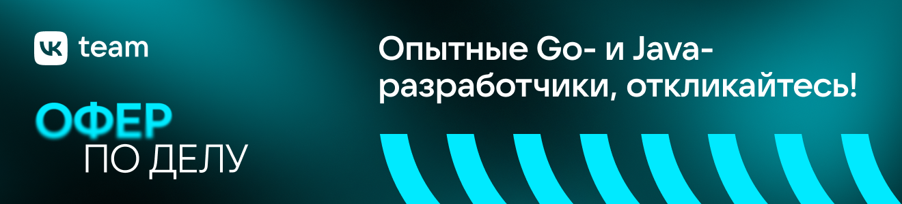
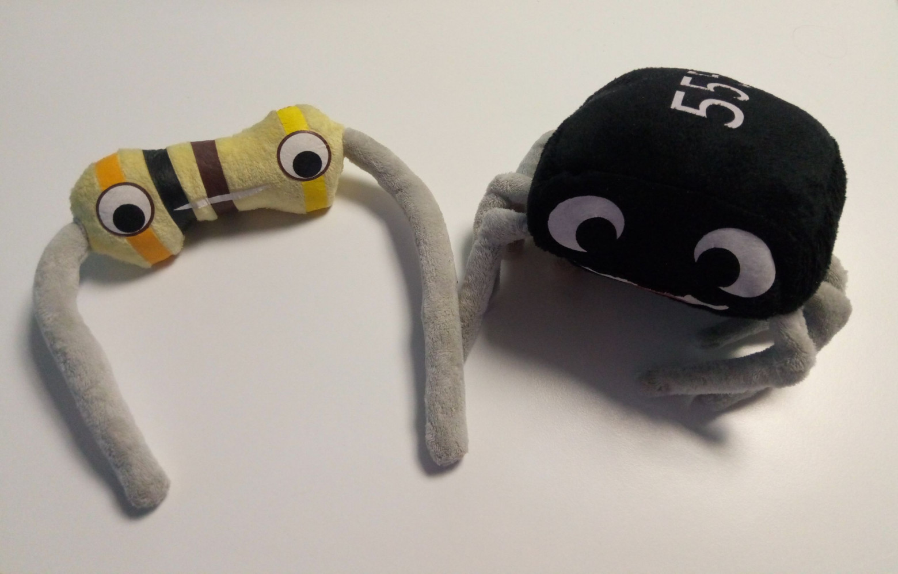

Погнали в космос?
Погнали в космос?
gag_fenix27 фев 2019 в 17:20
Где покупать радиодетали? Часть II: зарубежные магазины
5 мин91K
Блог компании VKDIY или Сделай самЭлектроника для начинающих
Продолжение поста про интернет-магазины электронных компонентов, инструментов и прочих ардуин.

Disclaimer: автор никак не связан с нижеперечисленными магазинами. Вся информация взята с официальных сайтов, либо является личными впечатлениями автора. Оценка количества позиций в ассортименте взята из запросов в Google.
Китай
Ассортимент:
Чем интересны:
Ассортимент:
Чем интересны:
Ассортимент: в первую очередь компоненты, т.е. микросхемы, транзисторы, резисторы, потенциометры, но не только.
Из интересного: большой выбор ручек для потенциометров, цветные металлические корпуса.
Работает давно. На Facebook почти каждый месяц публикуют скидочные коды.
Ассортимент:
Чем интересны:
Китайские маркетплейсы
В первую очередь стоит упомянуть Aliexpress, JD.ru и Pandao. У них есть перевод на русский язык и поиск, хоть иногда и хромающий, а главное — работает система жалоб.
У Alibaba Group, помимо Aliexpress, есть сайты, ориентированные на внутренний китайский рынок: Taobao (C2C), TMall (B2C) и Alibaba (B2B). Сюда стоит идти, если вам нужно что-то очень особенное, и при этом вас не пугает интерфейс на китайском и отсутствие возможности вернуть деньги. Кроме того, в случае с Taobao и Tmall вам, скорее всего, понадобятся услуги посредника для пересылки в Россию. Если вы всё-таки решились, то вот толковая статья про общение с китайскими продавцами.
Побуду Капитаном Очевидность: к преимуществам покупок в Китае относятся огромный доступный ассортимент, низкие цены и недорогая, если не бесплатная, доставка. Что говорить: 90 % посылок в РФ идут из Китая.
Но надо понимать, что на маркетплейсе может торговать кто угодно, поэтому есть шанс нарваться на недобросовестных продавцов. Иногда они даже подделывают микросхемы, мосфеты или завышают характеристики конденсаторов и т.д. — почитайте MySKU или форум ixbt. Лично я подделки не встречал, но всё равно стоит соблюдать меры предосторожности: не покупайте по подозрительно низкой цене, не покупайте у продавцов с низким рейтингом, читайте отзывы, пришедший товар проверяйте и, если что-то не так, открывайте диспут.
Китайские реселлеры
Стоит также упомянуть гигантские китайские B2C-магазины, которые торгуют всем на свете, и в том числе DIY-тематикой: Banggood, BuyInCoins, DealExtreme, GearBest, TomTop, Tmart. Достойные конкуренты маркетплейсам: у них есть поддержка, программы лояльности, акции и т. п. Перечисленные сайты заслуживают определённого доверия, потому что работают уже много лет.
США
adafruit.com
Интересный магазин, который ещё и производит свои собственные модули. Ведут свой блог, раздел с руководствами, GitHub.
К сожалению, с 2014 года перестал работать с покупателями из России даже через мэйл-форвардеров. Некоторые их модули можно купить у дистрибьюторов или на Ebay.
Хороший (5900+) ассортимент компонентов, множество наборов для сборки.
Разработчик семейства IoT-модулей Onion Omega — микрокомпьютеров с Linux на борту, и периферии для них. Магазин отправляет напрямую в РФ, цены на доставку относительно гуманные.
Ассортимент:
Чем интересны:
Глобальные дистрибьюторы
Самые-самые крупные в мире продавцы электронных компонентов:
У них есть всё. Пару-тройку раз, когда мне требовался редкий чип, я топал именно сюда. Ваш заказ, скорее всего, переведут на местного российского дистрибьютора, либо можно притвориться местным, т.е. воспользоваться сервисом пересылки посылок из США.
Прочие
Мой любимый маркетплейс — здесь люди выставляют на продажу свои мелкосерийные электронные изделия, модули, наборы для сборки. Часто к товару прилагается документация: схема, код, BOM и т.д.
Для примера: MPPT-контроллер для солнечных батарей с радиотелеметрией, часы MSP430 на лампах, контроллер ламп ИН-12, набор для сборки Z80-компьютера.
Цена доставки может быть очень разной, зависит от веса, объёма и страны продавца.
Как выбрать магазин?
Очевидно, что на вопрос «где покупать» нет однозначного ответа — всё зависит от того, что именно вы хотите купить, сколько готовы ждать и т.п.
Прежде чем бросаться покупать что-то за рубежом, стоит посмотреть местные цены. См. предыдущий пост. Например, инструмент и расходники в наших магазинах могут стоить дешевле, или же преимущество в цене съедается стоимостью доставки: за морем телушка — полушка, да рубль перевоз. Конструкторы для начинающих тоже есть смысл брать у нас, потому что инструкция будет на русском.
Китай привлекателен дешевой доставкой и низкими ценами. Но, как уже было упомянуто, есть опасность получить некачественный товар, или не в том количестве, или вообще подделку. Поэтому не ленитесь и сразу проверяйте работоспособность пришедших игрушек, особенно из маркетплейсов. Больше доверия заслуживают крупные магазины — хотя они тоже могут отправить не то, а мне один раз просто перепутали заказ полностью. При этом китайским магазинам, заточенным под «хоббийщиков» — Seeedstudio, Tayda, Waveshare и т.д. — можно доверять, но там, конечно, нет всей номенклатуры. Скидки в Китае далеко не всегда честные; главный день распродаж — 11 ноября.
Доставка из США, как правило, дорогая и часто убивает весь смысл покупки. Либо нужно рисковать с неотслеживаемой доставкой. Кроме того, некоторые, даже хоббийные, вещи запрещены к экспорту, или вас попросят дать честное письменное пионерское, что вы не военный и не перепродадите чип в Иран или на Кубу. С другой стороны, в США развит «мейкерский» рынок и есть интересные штуки. И не забудем про их скидки на Чёрную пятницу в конце ноября.
Если же нужно, что-то редкое или оптом, стоит посмотреть в сторону глобальных дистрибьюторов.
Удачных покупок!
Пост подготовлен DIY-сообществом Mail.ru Group. Подписывайтесь на наш Youtube-канал и на канал в Telegram (ретрансляция в группу ВК).
Теги:
Хабы:
+72